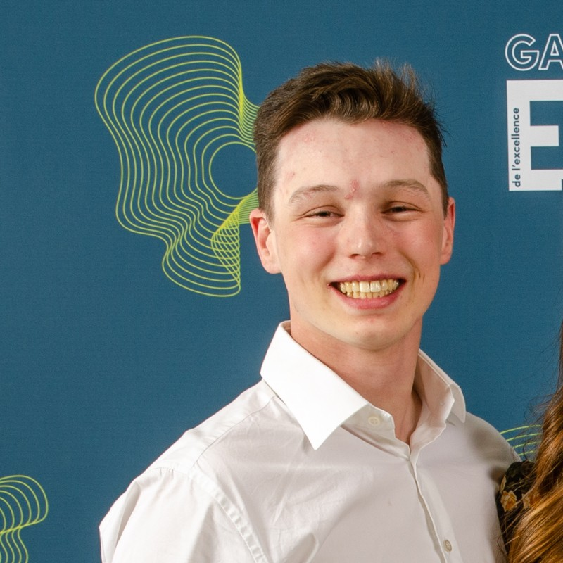

Services contractuels en technologie du génie physique
Innover. Intégrer. Réussir.
TechnoTP est une entreprise canadienne de services contractuels fondée à Sherbrooke, QC, par deux technologues en génie physique, diplômés du Cégep de La Pocatière et poursuivant des études universitaires à l'Université de Sherbrooke.
Notre expertise complémentaire couvre le spectre complet de la physique appliquée — de l'optique et la spectroscopie à la robotique, l'automatisation et le développement logiciel.

Co-fondateur
DEC Technologie du génie physique — Cégep de La Pocatière
B.Sc. Physique — Université de Sherbrooke (en cours)
Spectroscopie optique/laser, systèmes à vide, Python/PyQt, LabVIEW, Arduino, acquisition de données, fibres optiques, pilote de drone certifié SATP
Conception, intégration et maintenance de montages optiques : spectroscopie laser (OES/LIBS), fibres optiques, alignement, sources et détecteurs, systèmes photoniques.
Installation, calibration et dépannage d'instruments de laboratoire : spectromètres, systèmes à vide, spectrométrie de masse, capteurs et systèmes d'acquisition de données.
Applications GUI sur mesure (Python/PyQt), instruments virtuels LabVIEW, pipelines d'analyse de données, intégration matériel-logiciel, traitement du signal, développement full-stack.
Conception de circuits, soudure, programmation de microcontrôleurs (Arduino, C embarqué), synchronisation, électronique analogique/numérique, automatisation industrielle, systèmes robotiques.
Vision par ordinateur, traitement d'images, conception de capteurs et de chaînes de mesure physique. Pilote de drone certifié SATP comme outil de mesure de phénomènes physiques.
Conception CAO (SolidWorks, AutoCAD), impression 3D, prototypage, support en salle blanche/nanofabrication, accompagnement technique du concept à la réalisation.
Deux co-fondateurs couvrant le spectre complet : optique, robotique, logiciel, électronique, automatisation et travail terrain.
Expérience concrète en laboratoires R&D et en environnements industriels — RDDC, Solutions Novika, 3IT/L2N, BRP, RAYOPS.
Service complet en français et en anglais pour répondre aux besoins de tous vos projets au Canada et à l'international.
Modèle contractuel adaptable : court terme, long terme ou par projet, selon vos besoins.
Conception de capteurs et chaînes de mesure physique adaptés à vos besoins, incluant la vision numérique et le drone comme outils de mesure.
Tous deux poursuivant des études universitaires avancées — toujours au courant des dernières technologies et méthodes.